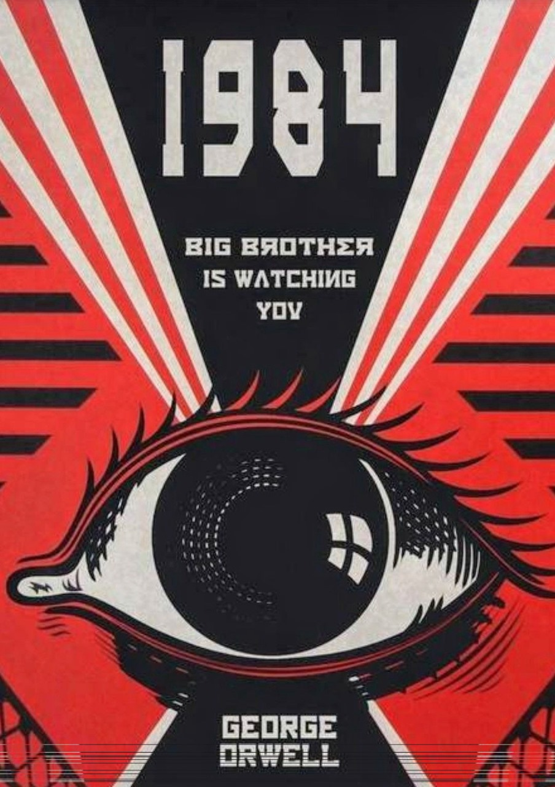
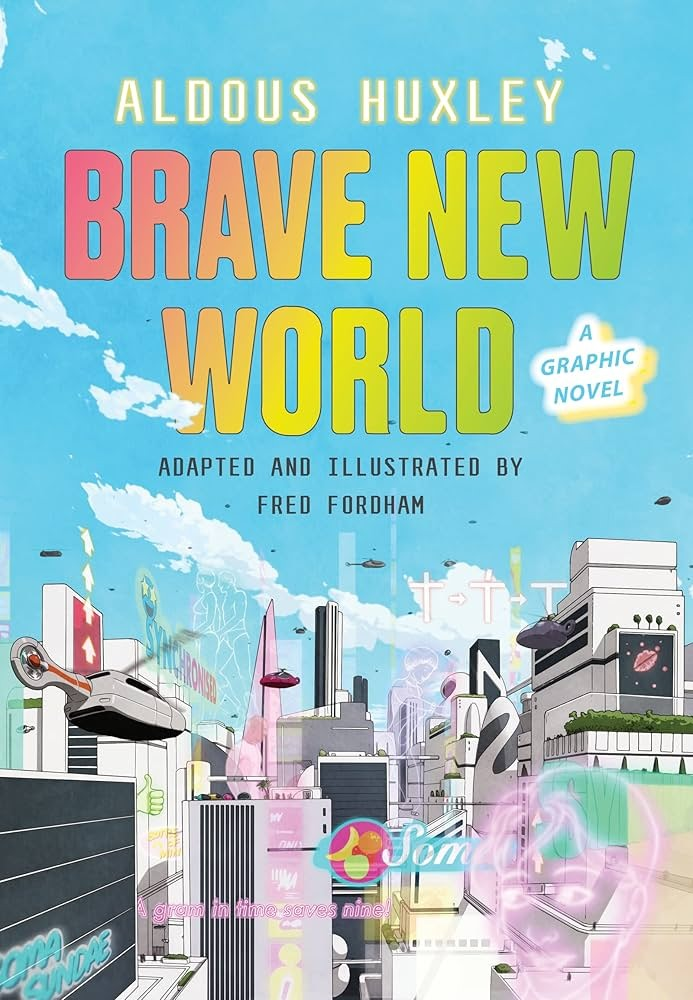
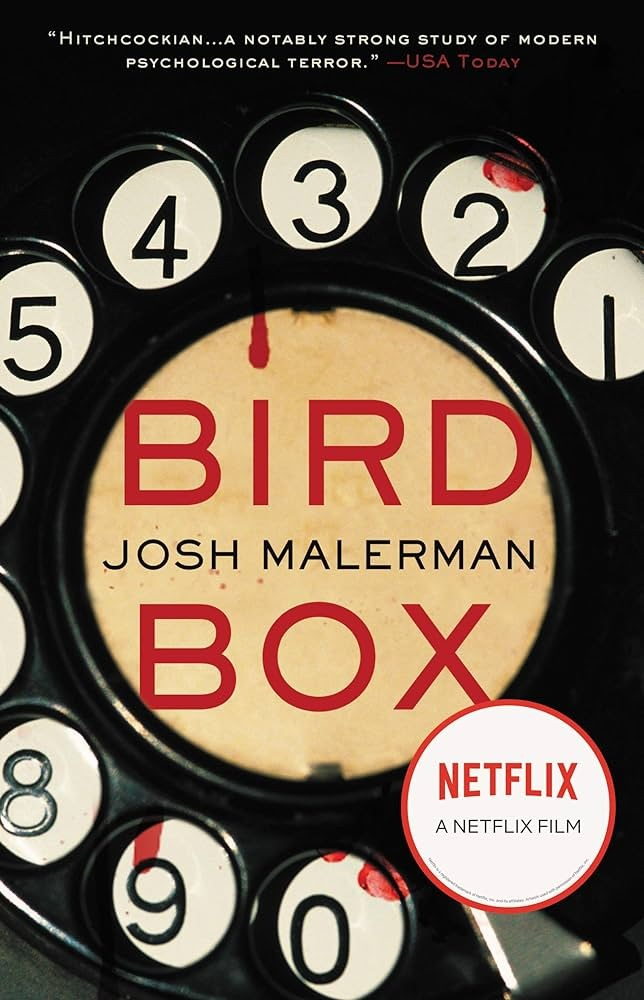

|

★★★★★
|
By - J.D. Salinger
"The Catcher in the Rye" is a classic coming-of-age novel narrated by Holden Caulfield, a disillusioned and rebellious teenager who has been expelled from prep school.
Set in post-World War II New York City, the story follows Holden as he embarks on a journey of self-discovery, grappling with themes of alienation, innocence, and
the loss of childhood innocence.J.D. Salinger's narrative is characterized by its distinctive voice, colloquial language, and exploration of the angst and confusion of adolescence.
The novel's portrayal of Holden's encounters with various characters and his internal monologue offers a poignant and introspective look at the challenges of growing up.
"The Catcher in the Rye" is celebrated for its influential impact on literature and its portrayal of teenage rebellion and existential angst. Salinger's ability to capture the
complexities of adolescent psychology and the search for authenticity makes it a timeless and thought-provoking coming-of-age story that continues to resonate with readers.
|
|

★★★★★
|
By - Laurie Halse Anderson
"Speak" is a contemporary young adult novel that explores the aftermath of trauma and the journey to reclaim one's voice. The story follows Melinda Sordino, a high
school freshman who becomes an outcast after calling the police at a party. As she navigates the challenges of social isolation and internal turmoil, Melinda finds solace
in art class and gradually begins to confront the truth about what happened to her.Laurie Halse Anderson's narrative is characterized by its raw emotion, powerful imagery,
and exploration of themes such as trauma, silence, and resilience. The novel's portrayal of Melinda's emotional journey and her eventual empowerment through self-expression
resonates with readers through its honesty and sensitivity."Speak" is celebrated for its impactful portrayal of issues such as sexual assault, bullying, and the importance of
speaking out against injustice. Anderson's ability to capture the complexities of adolescent trauma and recovery makes it a compelling and essential coming-of-age story that
encourages empathy, understanding, and healing.
|
|

★★★★★
|
By - Khaled Hosseini
"The Kite Runner" by Khaled Hosseini
Review: "The Kite Runner" by Khaled Hosseini is a historical fiction novel set against the backdrop of Afghanistan's tumultuous history, spanning from the fall of the monarchy in
the 1970s to the rise of the Taliban regime in the 2000s. The story follows Amir, a privileged Pashtun boy, and Hassan, his loyal Hazara servant and friend, as their childhood
friendship is tested by betrayal, guilt, and redemption.Hosseini's narrative is characterized by its emotional depth, exploration of themes such as loyalty, forgiveness, and the legacy
of past sins. The novel's depiction of Amir's journey from guilt-ridden exile in America back to war-torn Afghanistan to confront his past offers a poignant meditation on personal
responsibility and the search for redemption."The Kite Runner" is celebrated for its evocative storytelling, vivid portrayal of Afghan culture and history, and powerful examination of
the impact of political upheaval on ordinary lives.
|
|

★★★★★
|
By - Hilary Mantel
"Wolf Hall" by Hilary Mantel is a historical fiction novel set in 16th-century England during the reign of King Henry VIII. The story follows Thomas Cromwell, a commoner who rises to power
as one of the king's most trusted advisors. As Cromwell navigates court intrigue, political machinations, and religious upheaval, he plays a pivotal role in Henry's divorce from Catherine of
Aragon and his marriage to Anne Boleyn.Mantel's narrative is characterized by its intricate plotting, richly textured prose, and exploration of themes such as ambition, loyalty, and the
nature of power. The novel's portrayal of Cromwell as a complex and enigmatic figure offers a compelling perspective on Tudor England and the tumultuous events that shaped its history.
"Wolf Hall" is celebrated for its immersive storytelling, detailed historical research, and nuanced depiction of political maneuvering and personal relationships. Mantel's ability to bring
the past to life with vivid detail and psychological insight creates a gripping and thought-provoking narrative that invites readers into the heart of Renaissance England.
|
|
|

★★★★★
|
By - George Orwell
"1984" by George Orwell is a classic dystopian novel set in a totalitarian society ruled by the Party and its enigmatic leader, Big Brother. The story follows Winston Smith, a low-ranking member
of the Party who works for the Ministry of Truth, where he falsifies historical records to align with the Party's propaganda. As Winston begins to question the oppressive regime and explore forbidden
thoughts of rebellion and individuality, he becomes entangled in a dangerous game of surveillance, betrayal, and resistance.Orwell's narrative is characterized by its chilling portrayal of
surveillance, propaganda, and the erosion of personal freedom under a repressive government. The novel's exploration of themes such as truth, power, and the consequences of unchecked authority remains
relevant in contemporary discussions about surveillance culture and totalitarianism."1984" is celebrated for its prophetic vision, evocative prose, and provocative exploration of political and social themes.
Orwell's depiction of a dystopian future where reality is controlled and manipulated by those in power continues to resonate with readers, offering a stark warning about the dangers of authoritarianism
and the importance of preserving individual liberty.
|
|
|

★★★★★
|
By - Aldous Huxley
"Brave New World" by Aldous Huxley is a dystopian novel set in a futuristic world where technology, consumerism, and genetic engineering have created a rigidly stratified society. The story
follows Bernard Marx, an Alpha caste who questions the conformity and superficiality of his world, and John,a "Savage" raised outside the controlled society who challenges its values and norms.
Huxley's narrative is characterized by its exploration of themes such as social control, individuality, and the pursuit of happiness through pleasure and conformity. The novel's depiction of a world
where happiness is manufactured through drugs, conditioning, and instant gratification offers a provocative critique of modernity and the potential consequences of unchecked technological advancement.
Huxley's ability to blend speculative fiction with social commentary creates a compelling and disturbing portrait of a future where freedom and individuality are sacrificed in the name of stability and efficiency.
|
|

★★★★★
|
By - Naomi Novik
"Uprooted" by Naomi Novik is a standalone fantasy novel inspired by Eastern European folklore and fairy tales. The story is set in a village bordered by a malevolent and mysterious forest, protected by a
powerful wizard known as the Dragon. Every ten years, the Dragon selects a young woman from the village as payment for his protection, and when Agnieszka is chosen, she discovers her own untapped magical abilities.
Novik's narrative is characterized by its lush prose, evocative atmosphere, and strong sense of place, as well as its exploration of themes such as identity, power,and the bonds of friendship. Agnieszka's journey
from a reluctant apprentice to a formidable sorceress unfolds against the backdrop of political intrigue, ancient curses, and supernatural threats."Uprooted" is celebrated for its inventive reimagining of
traditional fairy tale tropes, including its nuanced portrayal of magic as both a source of wonder and danger. Novik's skillful blending of folklore elements with a coming-of-age narrative creates a mesmerizing and
enchanting reading experience that captures the imagination and leaves a lasting impression.
|
|

★★★★★
|
By - John Green
"The Fault in Our Stars" by John Green is a poignant and deeply moving young adult romance novel that explores themes of love, loss, and the meaning of life. The story follows Hazel Grace Lancaster,
a sixteen-year-old girl living with cancer, whose life is transformed when she meets Augustus Waters, a charming and witty boy in her support group.Green's narrative is characterized by its honest portrayal
of illness, mortality, and the impact of love on the human spirit. Hazel and Augustus form a powerful bond as they navigate their shared experiences of illness and uncertainty, finding solace and joy in each
other's company despite the challenges they face."The Fault in Our Stars" is celebrated for its authentic characters, heartfelt dialogue, and emotional depth. Green explores profound questions about suffering,
resilience, and the search for meaning with sensitivity and insight, creating a narrative that resonates with readers of all ages.The novel's exploration of love that transcends physical limitations and its
exploration of life's big questions make
|
|

★★★
|
By - William Gibson
"Neuromancer" by is a groundbreaking cyberpunk novel that introduced readers to the concept of cyberspace and helped define the genre.Set in a dystopian future where multinational corporations wield immense
power, the novel follows Case, a washed-up computer hacker hired for one last job that could grant him access to cyberspace again. Teaming up with a mysterious street samurai named Molly and a powerful AI, Case
navigates a world of high-tech intrigue, virtual reality, and corporate espionage.Gibson's prose is fast-paced and evocative, painting a vivid portrait of a future where technology blurs the line between reality
and virtuality. The novel's exploration of themes such as artificial intelligence, corporate greed, and the impact of technology on human identity remains relevant today. "Neuromancer" is credited with popularizing the
cyberpunk subgenre and influencing a generation of writers and filmmakers with its gritty portrayal of a hyper-connected yet alienating future.The novel's blend of noir aesthetics, cutting-edge technology,
and philosophical musings on the nature of consciousness and freedom make "Neuromancer" a must-read for fans of speculative fiction and anyone interested in the intersection of technology and society.
|
|
|

★★★★
|
By - Josh Malerman
"Bird Box" is a chilling and suspenseful horror novel by Josh Malerman that explores the terror of the unseen and the fragility of human sanity. The story is set in a post-apocalyptic world where supernatural creatures
have driven most of humanity to madness and death. The survivors, including protagonist Malorie, must navigate their dangerous new reality blindfolded to avoid glimpsing the creatures that haunt them. Malerman creates
an atmosphere of relentless tension and claustrophobia as Malorie struggles to protect herself and her children while searching for safety. The novel's unconventional narrative structure, alternating between the present
and flashbacks to the onset of the apocalypse, heightens the sense of dread and uncertainty. "Bird Box" is a gripping psychological thriller that explores fear, survival instincts, and the lengths people will go to
protect their loved ones.
|
★★★★★
|
By - Michelle Obama
"Becoming" by Michelle Obama
"Becoming" is the deeply personal and insightful autobiography of Michelle Obama, the former First Lady of the United States. In this book, Michelle chronicles her journey from her childhood in Chicago's South Side to her
years at Princeton University and Harvard Law School, her career as a lawyer and public servant, and her time in the White House. Michelle's narrative is marked by its warmth, honesty, and candidness, as she shares the challenges
and triumphs she faced along the way. She reflects on her experiences balancing work and family, her role as a mother, and the pressures of being the first African American First Lady. "Becoming" is a story of resilience, hope,
and the power of determination, offering readers an intimate look into the life of a remarkable woman who has inspired millions around the world.
|

★★★★
|
By - Dale Carnegie
First published in 1936, "How to Win Friends and Influence People" remains one of the most influential self-help books of all time. Dale Carnegie's timeless advice on how to build strong relationships and influence others is as
relevant today as it was when the book was first written. The book is divided into several sections, each focusing on different aspects of human interaction, such as how to make people like you, how to win people to your way of
thinking, and how to change people without arousing resentment. Carnegie's advice is practical and actionable, making it easy to apply in both personal and professional contexts. The book is filled with anecdotes and examples that
illustrate the principles in action. Its enduring popularity is a testament to the effectiveness of Carnegie's methods.
|

★★★★★
|
By - Eckhart Tolle
The Power of Now: A Guide to Spiritual Enlightenment" by
"The Power of Now" is a spiritual classic that has helped millions of readers find peace and purpose by living in the present moment. Eckhart Tolle explores the concept of mindfulness and the importance of being fully present in our lives.
He argues that most of our pain and suffering comes from dwelling on the past or worrying about the future, and that true happiness can only be found in the present. Tolle's teachings are rooted in various spiritual traditions,
but he presents them in a way that is accessible to a broad audience. The book is filled with profound insights and practical advice on how to quiet the mind and embrace the present moment.While some readers may find the concepts
challenging, those who are open to Tolle's message will find it transformative and life-changing.
|
|
|